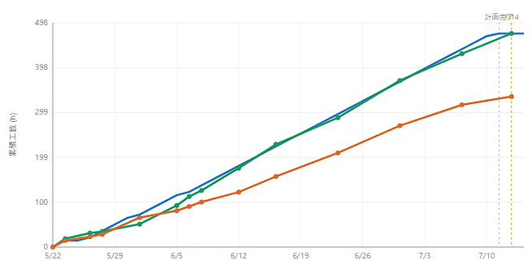
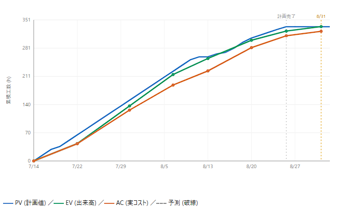

青＝計画(PV) ／ 緑＝出来高(EV) ／ 橙＝実コスト(AC)。計画 474.1h / 実績 334.0h ― 橙が離れたまま終わった。

同じ3本。計画 334.3h / 実績 322.6h ― 橙が緑にほぼ重なって終わった。
乖離は「速い」の証拠でもあった。どちらも実績 < 計画。イテ1はその差が3割残り、計画が現実を映していなかった。
イテ2は最後まで重なった。序盤 0.99 → 中盤 0.88 → 終盤 0.96。途中で崩れず、振れも小さい。単発の当たりではない。
スコープの性質は逆風だった。イテ1は画面・IFの反復、イテ2は新規の基盤設計。難しい側で精度が上がった。
順番としては ①→②→③ と見ている。ただし③慣れと④計測は分離できていないので、「精度が上がった理由」を今の時点で断定しない。
次の見積もりは、この係数で置いてよい。イテ3 も同じ係数で組んである。外れ方が分かることも成果で、外れたら係数を更新する。
乖離ゼロを目標にはしない。実績が計画を割るのは AI駆動が速いということ。見たいのは計画が現実の形をしているかだけ。
イテレーション2 タスク管理（EVM）→ イテレーション1 タスク管理 → AsIs / ToBe 工数比較 → 数値の出どころ。EVM は各ページの記録スナップショット。